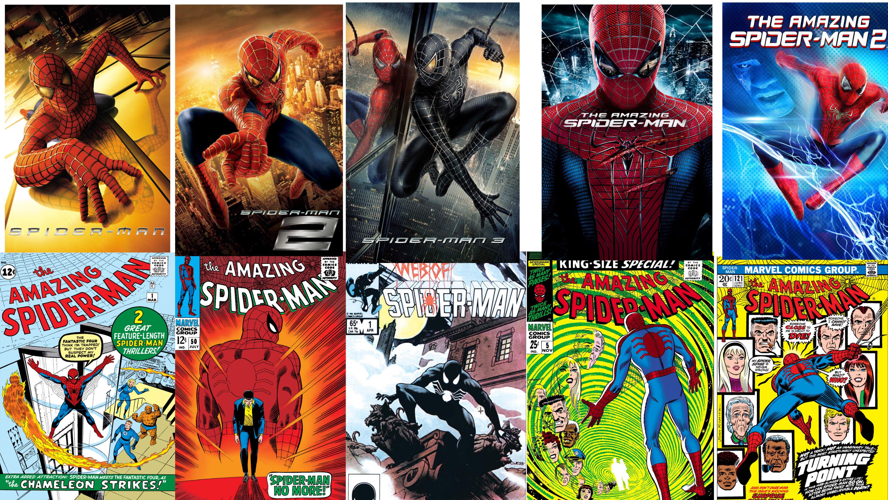

En donde aparece
Spider-Man aparece en cómics, películas y series, entre otros medios: Cómics: Spider-Man debutó en el cómic Amazing Fantasy #15, publicado por Marvel Comics en agosto de 1962. Stan Lee escribió la historia y Steve Ditko la ilustró. Películas: La mayoría de las películas de Spider-Man están disponibles en Disney+, excepto Spider-Man: Homecoming, que se puede ver en Amazon Prime Video. La trilogía de Spider-Man en el Universo Cinematográfico de Marvel (UCM) incluye Spider-Man: Homecoming (2017), Spider-Man: Lejos de casa (2019) y Spider-Man: No Way Home (2021). Series: Spider-Man está disponible en Disney+. Spider-Man: A través del Spider-Verso se estrenará en HBO Max el 3 de noviembre.